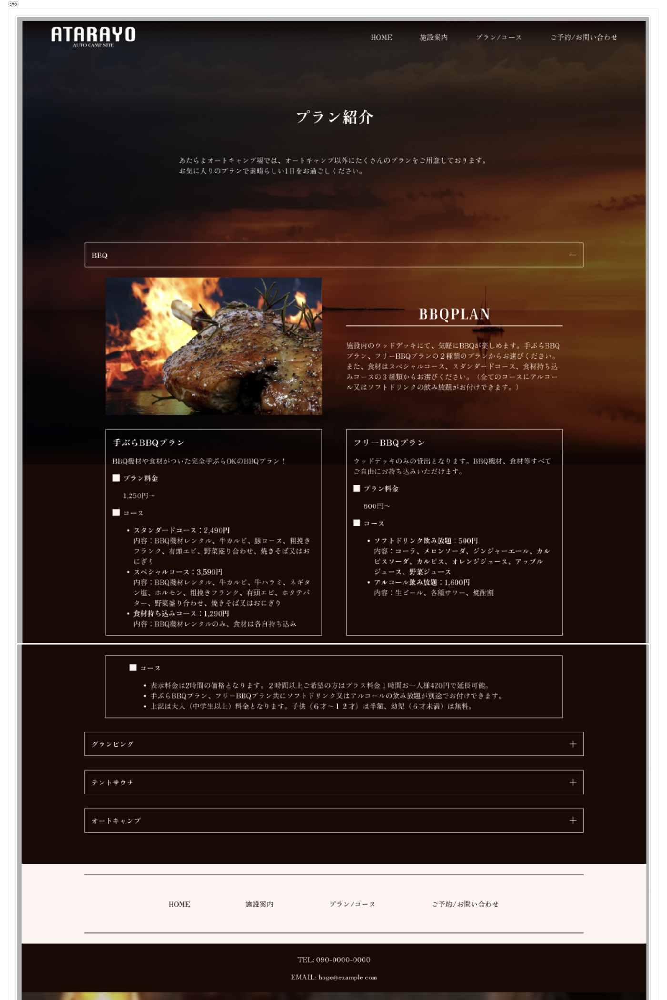

訓練校｜全4時間の集中授業

時刻はおおまかな区切り（今回はタイムスタンプなしの文字起こしのため、内容ベースで区切っています）。★★★＝特に重要。
| 区切り | 内容 | 重要度 |
|---|---|---|
| 1時間目 序盤 | Aboutページ作成スタート（教科書サンプル参考） | ★★ |
| 1時間目 | 丸画像問題：Figmaで丸 vs CSSで丸（更新者を考えると後者） | ★★★ |
| 1時間目 | ファーストビューの高さ設計（560px・モニターの5分の3） | ★★★ |
| 1時間目 | ヘッダー/フッターをコンポーネント化（3分割で柔軟性） | ★★★ |
| 1時間目 | フレームをクリックしてからペースト＝同位置貼付け | ★★ |
| 1時間目 | アイテム幅300px＝小さなスマホでもレスポンシブ不要 | ★★★ |
| 1時間目 | ⌘+Shift+G でオートレイアウト一時解除→整列 | ★★ |
| 2時間目 | プロトタイプ機能の紹介（クリックできるカンプ） | ★★★ |
| 2時間目 | リンク接続・コンポーネントへ設定→インスタンスに反映 | ★★★ |
| 2時間目 | 次に移動／次にスクロール／リンクを開く（3種類） | ★★ |
| 2時間目 | フローの開始地点・スムーズスクロール&リセット | ★★ |
| 2時間目 | ホバーアニメーション（バリアントでホバー前/後・ディソルブ0.3秒） | ★★★ |
| 3時間目 | プランページ：背景に半透明黒オーバーレイ | ★★ |
| 3時間目 | アコーディオン作成（プラス/マイナス・バリアント・ブール値） | ★★★ |
| 4時間目 | リストスタイル・Shift+Enterで開行（リスト記号なし） | ★★ |
| 4時間目 | パディングで余白 vs gapで余白（コーディング時は統一） | ★★★ |
| 4時間目 | 2カラムの高さ揃え（固定 or コンテナ拡大） | ★★ |
| 4時間目 | 予約カレンダー部分は仮枠でOK（外部サービス利用が一般的） | ★ |
WordPress等で更新者がFigmaを使えない前提なら、丸画像で書き出さずCSSで border-radius:50% にする。
ファーストビューは高さ固定がデザイン4大原則的にきれい。今回は560px（モニター実表示の5分の3）。
将来ページ追加で「振ったメニューだけ無い」等が起きうる。ロゴ／ナビ／ボタンを分けてコンポーネント化。
インスタンスを別フレームにコピペする時、フレームをクリックしてからペーストすると元と同じ位置に貼り付く。
カードを300pxに収めると、最小スマホ（375px）でもブレイクポイント不要でそのまま表示できる。
整列だけしたい時、一旦オートレイアウト化 → ⌘+Shift+G で解除。フレームも同じ。
クリックでページ遷移できるカンプ。コンポーネントに設定→インスタンスに反映される。
ホバー前/後をバリアントで2状態に作り、マウスオーバー時にディソルブで切り替え。
バリアントで開閉状態＋ブール値で表示切替＋テキストプロパティで文言。
パディング派 vs gap派は1つに揃える。混在するとエンジニアが混乱する。
6/3で完成したトップページに続いて、仮想ページ（About / プラン / 予約）も練習で作っていく。フレームは左から右に並べるのが習慣。フレーム名は AboutPC のようにページ名＋デバイス区分。
Desktop を選んでAboutPCを準備Aboutページの丸いプロフィール画像。「丸い素材で書き出して配置する」か、「普通のJPEG/PNGをCSSで丸くする」か。
border-radius:50% にしておけば、どんな画像を入れても丸くなる。
サイトを更新するのは誰だっけ、って話なんですよ。制作するのは制作会社、更新するのはクライアント側の担当者。専門知識があるとは限らない。── A先生
ファーストビューの高さは 「テキスト量に応じて変わる」 vs 「固定」 の2択。先生のおすすめは固定派。デザイン4大原則の「揃える」観点で、「ここがファーストビューだ」と一目で分かるようにするため。
ヘッダーを 「ロゴ／ナビ／お問い合わせボタン」の3パーツに分けてそれぞれコンポーネント化。フッターも同様。
→ 透明ヘッダーは背景に黒を敷くと見やすい。コンポーネント置き場のヘッダーは ロックしておくと便利。
トップPCで作ったヘッダーのインスタンスを、AboutPCの同じ位置に貼り付けたい時。
Aboutのプロフィールカードを並べる時、アイテム幅を300pxに収めると、後のコーディングでブレイクポイントを書かずに済む。
width を変える、% で相対指定する、といった手間が減る。コード量も減る。
/* 300pxのカードなら、375pxスマホでも左右に37.5pxずつ余白 */ .card { width: 300px; } /* ブレイクポイントの記述、不要！ */
3つのアイテムを複製・整列させたい時、隙間が1pxずれることがある。「正確に整列させたいけど、最終的にはオートレイアウトいらない」という時に。
2時間目の山場。プロトタイプ＝動きがあるカンプ／実際に触れるデザイン。クリックでページが遷移したり、アニメーションが動いたりする。
| アクション | 用途 |
|---|---|
| 次に移動 | 別ページへ遷移（リンク） |
| 次にスクロール | 同じページ内のセクションへ（ページ内リンク） |
| リンクを開く | 外部URL（例：ECサイトのBASE/Shopify等） |
リンクの「次に移動」は 同じFigmaページ内のフレームしか選べない。プロトタイプ接続したい場合は、コンポーネント置き場を同じページに置く必要がある。
ボタンにマウスを乗せると色が変わる、というアニメ。バリアントで実装する。
これでインスタンスでもホバー動作が再生される。実装の本番はHTML/CSSだが、Figmaで動きを見せると話が早い。
プランページの目玉。クリックで開閉する FAQ風のメニュー。前回までに学んだ バリアント＋ブール値＋テキストプロパティ を総動員する。
BBQプランのコース内容のような箇条書きを作る時。
• 等を選ぶ<ul><li> 相当で、コーディング時もリスト要素として実装されるテーブル内の左右の余白を取る方法は2通り。
padding: 0 24px;gap: 48px;左カラムと右カラムでテキスト量が違う時、高さが揃わない。CSSのflexなら自動で揃うはずだが、Figma段階でも見せ方を選べる：
| 用語 | 意味 |
|---|---|
| 仮想ページ | About / プラン / 予約など、トップ以外のページ |
| 丸画像のCSS化 | border-radius:50%で角を丸める手法。更新者の負担を減らす |
| ファーストビュー（FV） | ページを開いて最初に見える領域。高さ固定が無難 |
| プロトタイプ | 動きがあるカンプ。クリックで遷移、ホバーで色変化など |
| フローの開始地点 | プレビュー時に最初に表示されるフレーム |
| 次に移動 / 次にスクロール / リンクを開く | プロトタイプの3アクション（ページ遷移／ページ内リンク／外部URL） |
| マウスオーバー時 | ホバーのトリガー名（公式表記） |
| ディゾルブ／スマートアニメイト | アニメーション種別。ディゾルブ＝フェード、スマート＝補完アニメ |
| アコーディオンメニュー | クリックで開閉する折りたたみメニュー（FAQ等） |
| リストスタイル | HTMLのul/liに相当。Figmaでも書式から設定できる |
| Shift+Enter | リスト記号を付けずに改行する |
| パディング派 / gap派 | 余白の取り方。混在NG、統一すべし |
サイトを更新するのは誰だっけ、って話なんですよ。CSSで丸くしておけば、どんな画像でも丸く入ってくれる。── 丸画像問題
アイテムを300pxにしておけば、ちっちゃいスマホの時にもブレイクポイントとか書かずに表示できる。無駄なコードの量が減らせるんで便利。── レスポンシブ対応の小技
パディング派とgap派、実際に実装するときはどちらかに揃えた方がいい。エンジニアさんが見たときに混乱しないからですね。── 統一の重要性
向こう10年ぐらいはFigmaが波動を得るんじゃないかなと思います。5年短く見積もっても、5年ぐらいはずっとデザインのベースのツールになる。── 6/11 Figma授業終了時の所感